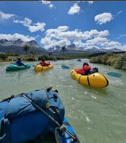

Rapids Rafting Company was founded with the goal of sharing the thrill and adventure of white-water rafting with people from all walks of life. The company was established by a passionate team of professionals, each bringing their unique skills to the table. Juan Delgado, our lead Adventure Guide, has spent years navigating the wildest rivers, ensuring that each journey is not only exciting but also safe. His expertise, combined with the leadership of James Lee, our Safety Instructor, guarantees that every trip is equipped with the highest safety standards, so you can focus on the adventure.

In addition to our exceptional guides and instructors, Sophie Tan, our Customer Service expert, plays a vital role in ensuring that every guest feels welcome and well-informed before and after their rafting experience. At Rapids Rafting Company, we are more than just an adventure company — we are a family of professionals committed to delivering unforgettable experiences. Whether you're a first-time rafter or a seasoned adventurer, our team is here to guide you through the rapids with expertise, care, and enthusiasm.